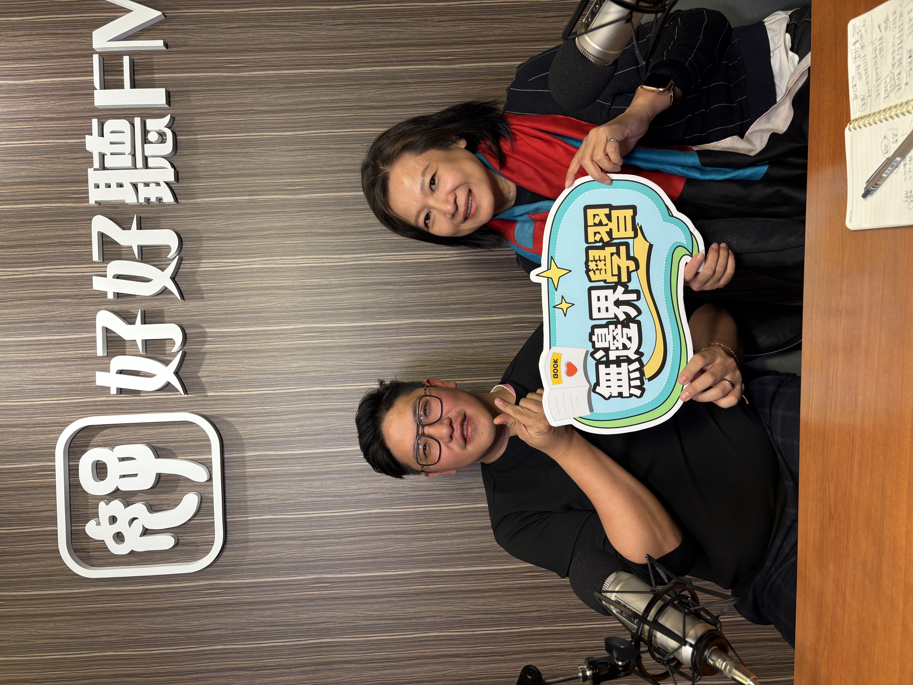

曾經在捷運裡，聽到隔壁的中學生在聊天，講的竟然是股市跟虛擬貨幣投資。在物質豐裕的網路世代，孩子們比我們想像中更早接觸到金錢。甚至對於未來升學要選文理組或科系，考量的唯一因素是「什麼會賺比較多錢」。在這些賺錢的渴望背後，藏著的是想急於證明自己，害怕自己在競爭中落後的焦慮; 但卻很可能是在不確定的未來，一不小心就會踩空的價值觀。
《無邊界學習》節目特別邀請在實驗教育單位教財商的老師陳重光，深入探討他認為這群青春正盛的孩子，該如何看待金錢與未來的選擇。
青春只有一次：當高中生掉進財富焦慮
陳重光老師分享了他對實驗機構高中生的真實觀察。有些孩子家境優渥，卻對未來感到倦怠與迷茫；有些孩子急著擺脫依賴，把追求金錢當成對抗父母或同儕的武器。
面對這樣的緊繃，陳重光老師總是溫柔卻堅定地向學生們提出一個特別的比喻——「愛因斯坦相對論」。

如果用絕對值來看，十五、六歲的年輕人擁有大把可以揮霍的青春；但如果拉長來看，把人生視為一場馬拉松，盲目為了賺錢而賠上健康、犧牲探索世界的體驗，那麼生命的厚度就薄了。
他總是這樣提醒學生：
「全世界唯一不能比較的東西是你的感覺，因為它們沒有計量單位，而財富有計量單位。你現在14、5歲，該做的事情是更多的體驗，了解你的人生想要選擇什麼。」
避開打工陷阱：看懂時間的「短多長空」
現代年輕人常寧願選擇時間彈性、卻隨時能被取代的短期勞務。陳重光老師想起自己大學時期的同學，當年為了賺點零用錢而放棄學業、四處打工，二十年過去了，仍在打工的迴圈裡打轉；反觀那些把時間投資在累積專業、看重無形資產的人，早已走出了截然不同的道路。
「這其實就是投資的概念，你投資你自己的東西是什麼？「時間」，就是最好的投資。」
賺錢本身沒有錯，但我們得帶著孩子停下來想一想：這是「短多長空」還是「短空長多」？在 AI 快速進步的時代，機器人可以幫忙寫文案、畫畫甚至是處理繁瑣事務，但人類獨有的「想法」與「溫度」是永遠無法被取代的。如果把寶貴的青春時光，全耗在容易被取代的勞務上，等於親手交出了主導自己人生的權利。
真正的富裕，是擁有「價值判斷」的力量
身為四個孩子的父親，同時也是孩子們生命中的同行者，陳重光深信：「選擇是人類最大的力量。」
大人不可能永遠替孩子做決定，我們能做的，是擴大他們的視野，讓他們看見不同的選擇會導向不同的風景。曾有學生在做年度人生計畫時告訴他，未來想成為一名「消防員」。原因不是為了賺大錢，而是在衣食無虞的成長過程中，渴望去幫助別人、認為那樣的生命姿態很帥氣。這種不流於俗套的思辨，往往讓大人也深受感動。
人生的價值，從來不只是被動收入的數字，而在於能否為自己、為身邊的人帶來溫暖與正向的改變。
從零用錢開始，練習為自己的選擇負責
面對家長最常苦惱的「零用錢教育」，陳重光建議，不妨回到生活本身，和孩子聊聊「資產與負債」以及「付出與收穫」。當孩子想要擁有某樣昂貴的物品時，家長不用急著全盤拒絕或直接買單，而是溫柔地引導：「自己出一部份，家長幫忙出一部份」，或者透過分擔家事來換取實質的報酬。
在日常生活的點滴互動中，讓孩子明白天下沒有白吃的午餐，每一次的投入都需要用心。當金錢不再只是盲目追逐的冰冷數字，而是成為支持人生選擇的自由工具時，孩子自然能長出責任感，踏實地走向屬於他們的豐盛人生。